The timeline, cause by cause
Ninety years of computing, oldest first. Each milestone is coloured by the floor of the tower it belongs to — and for almost every one, there is a real need that forced it into existence. The army needed firing tables; the phone company needed a reliable switch; the air force and NASA needed computers small enough to fly. Read the "why" lines: that is where the story lives.
The Pioneer Era (1936–1956)
From the mathematical dream to initial code and thinking machines.
Turing's Paper Machine — the math that begot code
Alan Turing designs an abstract, mathematical machine that reads and writes symbols on an infinite paper tape. It is the theoretical blueprint for all software and hardware ever made, proving that a single machine could perform any possible calculation.
Why it happened: mathematicians were obsessed with proving whether every math problem could be solved by a step-by-step recipe. To prove some couldn't, Turing first had to invent the mathematical definition of a "recipe" — accidentally inventing the computer.
ENIAC — electricity replaces human calculators
The world's first general-purpose electronic computer is built: a 30-ton giant containing 17,468 glowing vacuum tubes, computing 5,000 additions per second. It proved that electricity could calculate faster than human brainpower.
Why it happened: World War II artillery crews needed "firing tables" containing thousands of trajectory paths. Human math experts (called "computers") using desk calculators took weeks to finish one. The army needed lightning-fast calculations, so they funded an electronic one.
The Stored-Program Concept — putting code in the pantry
John von Neumann outlines the EDVAC design, proposing that a computer's instructions should be stored in the same memory as its data. This meant computers could be reprogrammed in seconds by loading new software rather than physically rewiring the machine.
Why it happened: reprogramming ENIAC was a nightmare. Teams of operators had to spend days flipping switches and replugging massive cables. The solution was simple but revolutionary: store the instructions as numbers, just like data.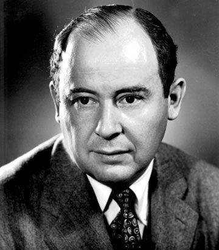
The Transistor — the solid-state revolution
Bell Labs physicists create the first transistor—a microscopic switch made of solid silicon. It does the same job as a hot, fragile vacuum tube but uses a fraction of the power, generates almost no heat, and never burns out.
Why it happened: the global telephone network was choked by millions of vacuum tubes that died constantly, requiring round-the-clock replacement. Bell Labs needed a reliable, solid switch to handle millions of phone calls without breaking down.
Information Theory — measuring the invisible "bit"
Claude Shannon publishes a paper proving that all human communication—text, sound, images—can be boiled down to binary "bits" (1s and 0s) and transmitted perfectly over noisy wires using math.
Why it happened: Bell Labs wanted to calculate the absolute speed limit of sending signals down copper phone lines. Shannon solved it, and in doing so, proved that all media could be digitized.
The First Compiler — teaching computers English
Grace Hopper designs the A-0 compiler system for the UNIVAC I, proving that humans can write code using English-like words which a program then automatically translates into machine numbers.
Why it happened: early programming meant writing endless lists of raw binary math. It was slow, frustrating, and prone to tiny mistakes. Hopper argued that since computers are good at math, they should do the translation work, not humans. Floor 5Dartmouth Workshop — naming "Artificial Intelligence"
A summer gathering of brilliant minds coins the term "Artificial Intelligence," launching a new scientific field dedicated to building machines that can learn, reason, and solve problems like humans.
Why it happened: with the first programmable computers finally operational, researchers bet that human thinking was just a set of logical steps that could be coded into a machine.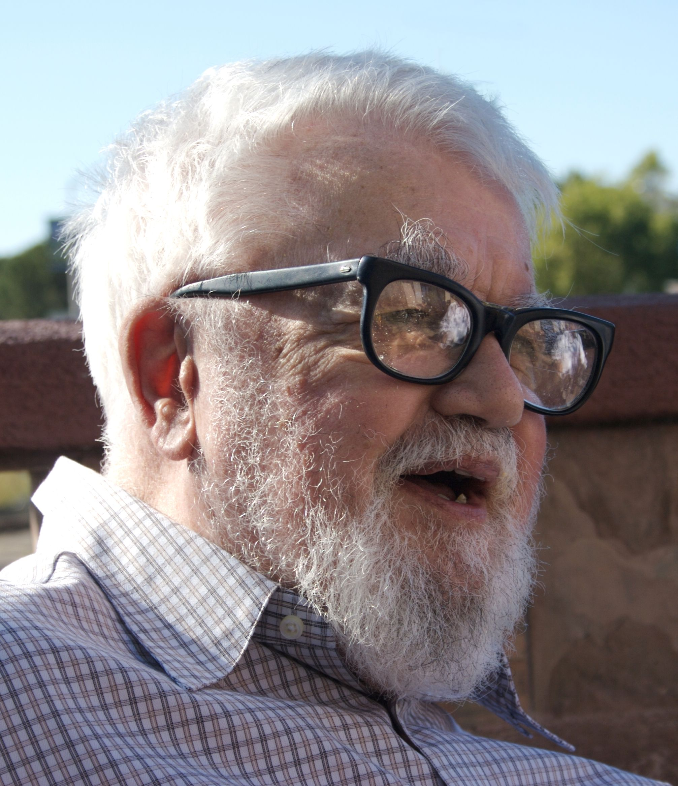
The Microchip & Silicon Era (1957–1974)
Shrinking physical gates onto pieces of rock, leading to OS, database, and network standards.
FORTRAN — software for scientists
IBM releases FORTRAN (Formula Translation), letting engineers write mathematical equations like A = B + C instead of raw machine numbers. It becomes the first widely adopted high-level programming language.
The Integrated Circuit — carving circuits in stone
Jack Kilby and Robert Noyce independently find a way to place multiple transistors, resistors, and wires onto a single slice of silicon. It eliminates hand-soldering and births the modern microchip.
Why it happened: the "tyranny of numbers"—to make more powerful computers, engineers had to solder millions of tiny components by hand. A single bad connection ruined the whole machine. Carving everything onto one piece of silicon was the only escape.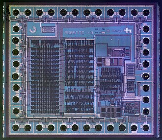
Minuteman & Apollo — funding the chip revolution
The US military and NASA buy integrated circuits in massive quantities to build guidance computers for the Minuteman II missile and the Apollo spacecraft, single-handedly funding the scale-up of chip factories.
Why it happened: missiles and spacecraft couldn't carry 30-ton rooms of vacuum tubes. They needed light, tiny, low-power computers. NASA and the military paid premium prices for chips, driving down manufacturing costs and making chips affordable for civilian use. Floor 2IBM System/360 — software standardization
IBM launches a family of computers that all share the same instruction set. For the first time, software written for a small computer can run unmodified on a giant mainframe.
Why it happened: before the 360, every computer model had unique hardware. When a business upgraded to a faster machine, they had to throw away all their code and rewrite it from scratch. IBM standardizes hardware to save their customers' software investments.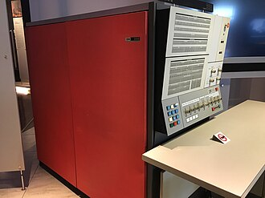
The Mother of All Demos — glimpsing the future
Douglas Engelbart stuns the tech world by demonstrating the computer mouse, graphical windows, clickable hypertext links, real-time text editing, and live video conferencing in a single 90-minute demo.
Why it happened: in 1968, computers were cold, massive calculators fed on punch cards. Engelbart envisioned computers as collaborative tools that could extend human intelligence, inventing the entire modern user interface in one go.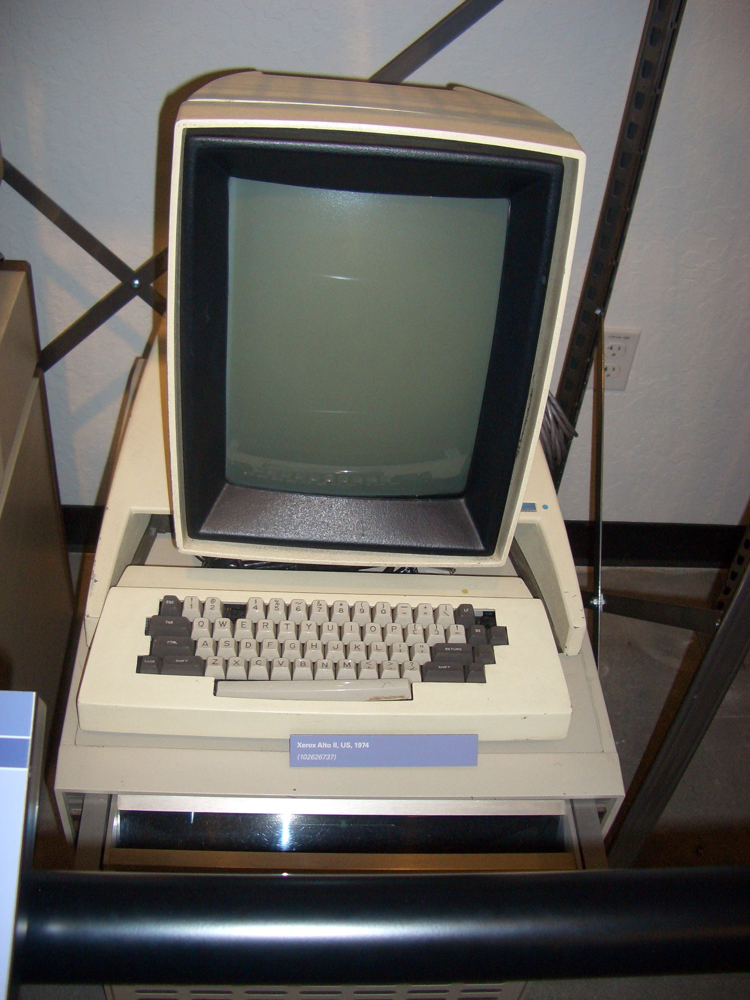
ARPANET — the first node of the internet
Four university computers are linked together, successfully exchanging messages by breaking data into tiny "packets" that find their own way across a network. It is the birth of the Internet.
Why it happened: supercomputers were incredibly expensive. Researchers at different universities needed a way to share access to these rare machines remotely, forcing the creation of a robust, decentralized network.
Unix — lean, modular operating systems
Ken Thompson and Dennis Ritchie create Unix, an operating system built on a simple philosophy: write small programs that do one thing well and chain them together. It becomes the software foundation of macOS, Linux, and the cloud.
Why it happened: their previous operating system project, Multics, became over-engineered and bloated. The creators wanted a lean, fun system they could run on a discarded, low-power minicomputer (mostly to play a game called Space Travel).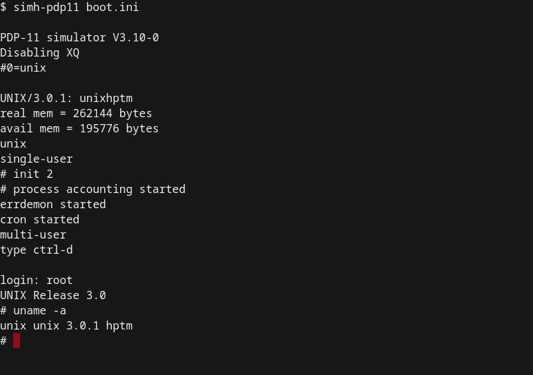
The Relational Database — data in clean tables
Edgar Codd proposes organizing database records into simple rows and columns across linked tables, separating the database's logical structure from its physical storage.
Why it happened: early database programs had to know exactly which disk sectors the data was written to. If you changed the physical layout, all the code broke. Codd wanted a system where developers could query *what* they wanted without worrying about *where* it was stored.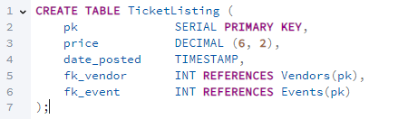
Intel 4004 — the computer on a fingernail
Intel crams an entire Central Processing Unit (~2,300 transistors) onto a single silicon chip. It marks the birth of the microprocessor, packing the power of room-sized machines into a tiny chip.
Why it happened: a Japanese calculator company wanted Intel to build 12 custom, specialized chips for a new desktop calculator. Intel realized designing 12 separate chips was too expensive and proposed building one flexible, programmable chip instead.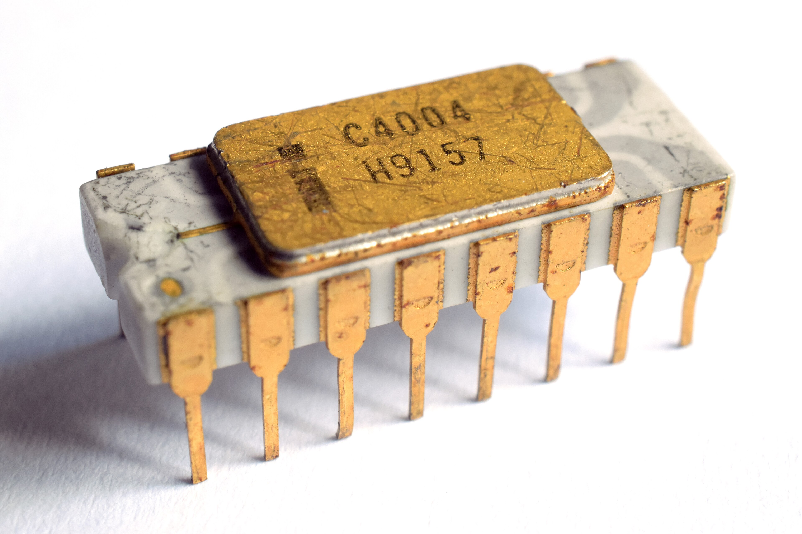
TCP/IP & Ethernet — the universal network language
Bob Metcalfe invents Ethernet to wire computers in the same building, while Vint Cerf and Bob Kahn design TCP/IP—a set of protocols that allows completely different networks to connect and pass packets.
Why it happened: by the early 1970s, different networks (radio, satellite, landlines) existed but couldn't talk to each other. Engineers needed a universal translation protocol so any computer network could communicate with any other—the birth of the inter-net. Floor 4The Personal & Connected Era (1975–1998)
Computers enter living rooms, networks activate globally, and the web makes it all visual.
The Personal Computer — moving to the living room
The Altair 8800 (1975) and the Apple II (1977) launch the home computing era, converting the microprocessor from a corporate tool into a personal appliance for hobbies, games, and writing.
Why it happened: the cheap microprocessors created in the early 1970s made parts inexpensive enough that hobbyists could build their own computers. The drop in hardware cost created an entirely new type of user: the general public. Floor 7Public-Key Cryptography (RSA) — trusting strangers
Ron Rivest, Adi Shamir, and Leonard Adleman invent RSA cryptography, using prime numbers to create public and private key pairs. Anyone can lock a message with the public key, but only the recipient can unlock it with their private key.
Why it happened: as computer networks began connecting unrelated organizations and people, sharing a secret password (symmetric key) securely over the wire became impossible. Trusting networks required a way to send secure messages without exchanging a password first. Floor 1 → Floor 4The Internet Activates & DNS is Born
On January 1, 1983, the ARPANET officially switches to TCP/IP. In the same year, the Domain Name System (DNS) is deployed, translating memorable names like example.com into numeric IP addresses.
HOSTS.TXT file copied by hand by every computer). DNS was needed to delegate address lookups to thousands of distributed servers, allowing the internet to scale infinitely.
Floor 4The Macintosh — computers "for the rest of us"
Apple releases the Macintosh, bringing the graphical user interface (GUI)—featuring a mouse, desktop folders, icons, and menus—out of research labs and into the consumer market.
Why it happened: command-line systems required users to memorize cryptic text commands, which scared away ordinary people. To make computers household objects, Apple built an interface that could be operated by pointing and clicking at visual metaphors.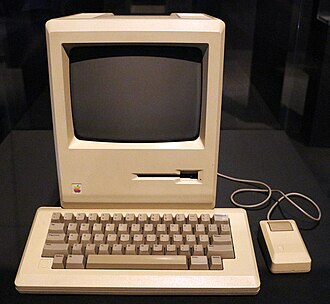
The World Wide Web — a web of documents
Tim Berners-Lee invents HTTP, HTML, and URLs at CERN, creating an open system of hyperlinked documents that sit on top of the physical infrastructure of the internet.
Why it happened: CERN scientists had documents scattered across hundreds of incompatible computers. Finding research papers required logging into separate systems with unique logins. Berners-Lee wanted a single, universal way to link information across all platforms.
Linux — open source conquers the servers
Linus Torvalds releases the Linux kernel as a free, open-source operating system project. It grows to become the operating system that runs the modern cloud, Android phones, and supercomputers.
Why it happened: Unix was the industry-standard OS but was locked behind expensive corporate licenses. Students and hobbyists wanted a free, Unix-compatible kernel that they could read, modify, and run on cheap consumer PCs.Mosaic — the web gets graphics
The NCSA releases Mosaic, the first popular web browser that displays images directly inline with text inside a single window, sparking the 1990s dot-com boom.
Why it happened: the early web was plain text and required opening images in separate windows. To appeal to a mass audience, the web needed to look like a magazine page—unifying text, layout, and pictures in one place. Floor 7Java & JavaScript — interactive web pages
Sun Microsystems launches Java, enabling cross-platform server code, and Brendan Eich writes JavaScript for Netscape, embedding a scripting engine directly inside the web browser.
Why it happened: early websites were static, dead documents. To build dynamic web applications (like search engines, shopping carts, and interactive games), the browser needed to run its own code in real-time on the user's computer. Floor 7PageRank — mapping web relevance
Larry Page and Sergey Brin launch Google using PageRank, an algorithm that judges a web page's importance by counting the number and quality of other pages linking to it.
Why it happened: the web was growing by millions of pages a year. Search engines of the time indexed keywords stupidly, leading to spam. Users needed an algorithm that understood *relevance* and trust to find quality information. Floor 5The Mobile & Cloud Era (2006–2016)
Renting elastic scale in the cloud, pocket-sized touch screens, and the neural network renaissance.
AWS — computing becomes a utility
Amazon launches Web Services (AWS), letting developers rent computing power, storage, and databases over the internet on a pay-as-you-go basis.
Why it happened: web startups had to spend thousands buying physical servers that sat idle 90% of the time, only to crash if they went viral. Renting elastic capacity on-demand turned infrastructure from a barrier to a utility.The iPhone — pocket-sized mobile computing
Apple launches the iPhone, combining multi-touch screens, mobile internet, and a desktop-grade web browser into a pocket-sized computer.
Why it happened: early smartphones were clunky devices with tiny keys and crippled web browsers. Using the web on the move was frustrating; people needed a device that behaved like a real computer but could be controlled entirely by finger touch.CUDA — the GPU becomes a math accelerator
NVIDIA launches CUDA, a programming model that allows developers to run general-purpose calculations on a GPU's thousands of tiny cores, not just graphics.
Why it happened: scientists noticed that graphics cards were exceptionally fast at matrix mathematics but could only be programmed using graphics code (like textures and shaders). They needed a clean way to run mathematical calculations directly on GPUs.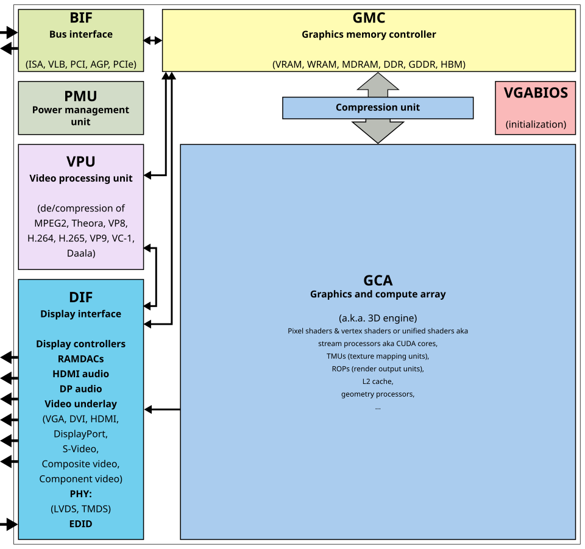
AlexNet — the rebirth of deep learning
Alex Krizhevsky and Geoffrey Hinton train a deep convolutional neural network on GPUs to win the ImageNet computer vision competition, beating traditional methods by a massive margin.
Why it happened: for decades, neural networks were dismissed as impractical. AlexNet proved that combining millions of labeled images (ImageNet) with massively parallel graphics processors (via CUDA) could make neural networks incredibly smart.AlphaGo — mastering intuitive strategy
DeepMind's AlphaGo program defeats legendary Go champion Lee Sedol 4–1 in Seoul, South Korea, using deep neural networks and reinforcement learning to evaluate board positions using human-like "intuition."
Why it happened: unlike chess, the game of Go has more board configurations than there are atoms in the observable universe. Brute-force calculations were useless; AI needed to learn how to evaluate board configurations by "feel" and pattern appreciation, just like human masters. Floor 6The Generative AI Era (2017–2026)
Transformers parallelize sequences, enabling massive language scale and local silicon accelerations.
★ The Transformer — parallelizing language
Google researchers publish "Attention Is All You Need," introducing the Transformer architecture. By reading sentences all at once rather than word-by-word, it enables massive scale and forms the basis of all modern LLMs.
Why it happened: earlier language models (RNNs) analyzed text sequentially. They were slow to train on GPUs and forgot context over long articles. Researchers needed an architecture that could read entire blocks of text in parallel and pay "attention" to related words. Why it's the turn: attention is just linear algebra done in parallel — a change on Floor 1, the mathematics. Because every floor stands on Floor 1, that one change rippled up the whole tower. See the cascade →
Scaling Up — the rise of large language models
AI labs scale up the Transformer architecture, training massive models on internet-scale text. GPT-3 (2020) demonstrates that scaling size alone leads to unexpected capabilities like writing essays and code.
Why it happened: because the Transformer could be trained in parallel on GPUs, developers realized they could feed it the entire internet if they made the model big enough. The result was a sudden jump in linguistic fluency. Floor 6ChatGPT — conversational interfaces for AI
OpenAI wraps a chat interface around GPT-3.5, launching ChatGPT. It becomes the fastest-adopted consumer application in history, reaching 100 million active users in two months.
Why it happened: the raw language models were already powerful but required complex prompting techniques. Wrapping them in a simple, familiar chat box democratized access, allowing anyone to chat with the AI naturally. Floor 7Agentic AI & MCP — software gets its hands
Anthropic open-sources the Model Context Protocol (MCP), establishing a universal standard for AI models to connect securely to local files, databases, IDEs, and APIs. AI transitions from a passive text box to an active agent that can write code, run commands, and execute complex workflows.
Why it happened: Large Language Models were isolated in sandboxes, unable to interact with the real world. To do practical work, they needed a standard way to interface with tools and data, similar to how USB standardized hardware connections. Floor 6DGX Blackwell — local supercomputing
NVIDIA ships Blackwell-based local supercomputers, bringing data-center-grade neural network processing directly to developer desks.
Why it happened: renting massive AI clusters in the cloud was becoming expensive, and enterprises worried about data privacy. Developers needed a way to run and fine-tune large models locally, pushing the hardware floor to pack more power into desktop form factors.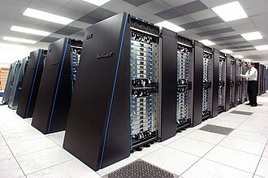
Hardware Ascends — Apple's next era
Apple appoints John Ternus, a hardware engineer, as its next CEO, highlighting the shift in strategic value back to physical silicon design in the AI era.
Why it happened: with the software of AI becoming standardized, the primary differentiator for user devices is local silicon efficiency—how fast and cool a chip can run neural networks. The value cascade that started on Floor 1 has cycled back down to Floor 2. Floor 7 → Floor 2